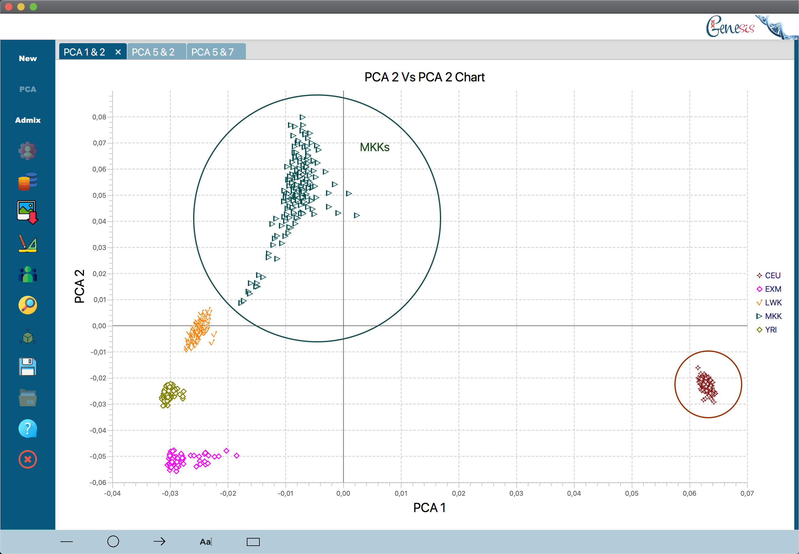
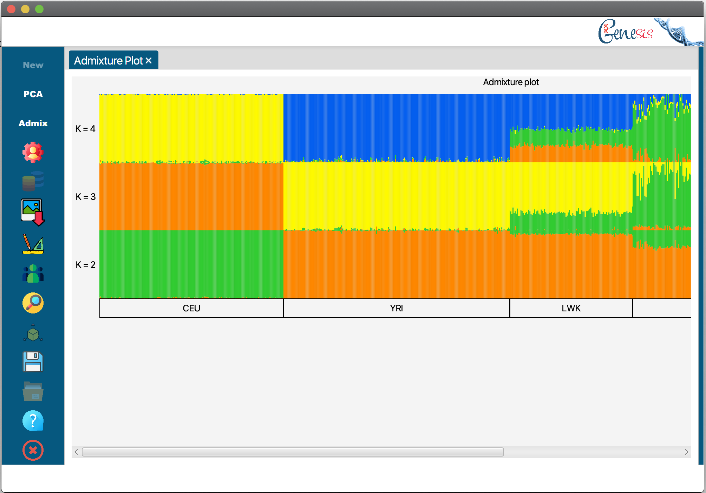
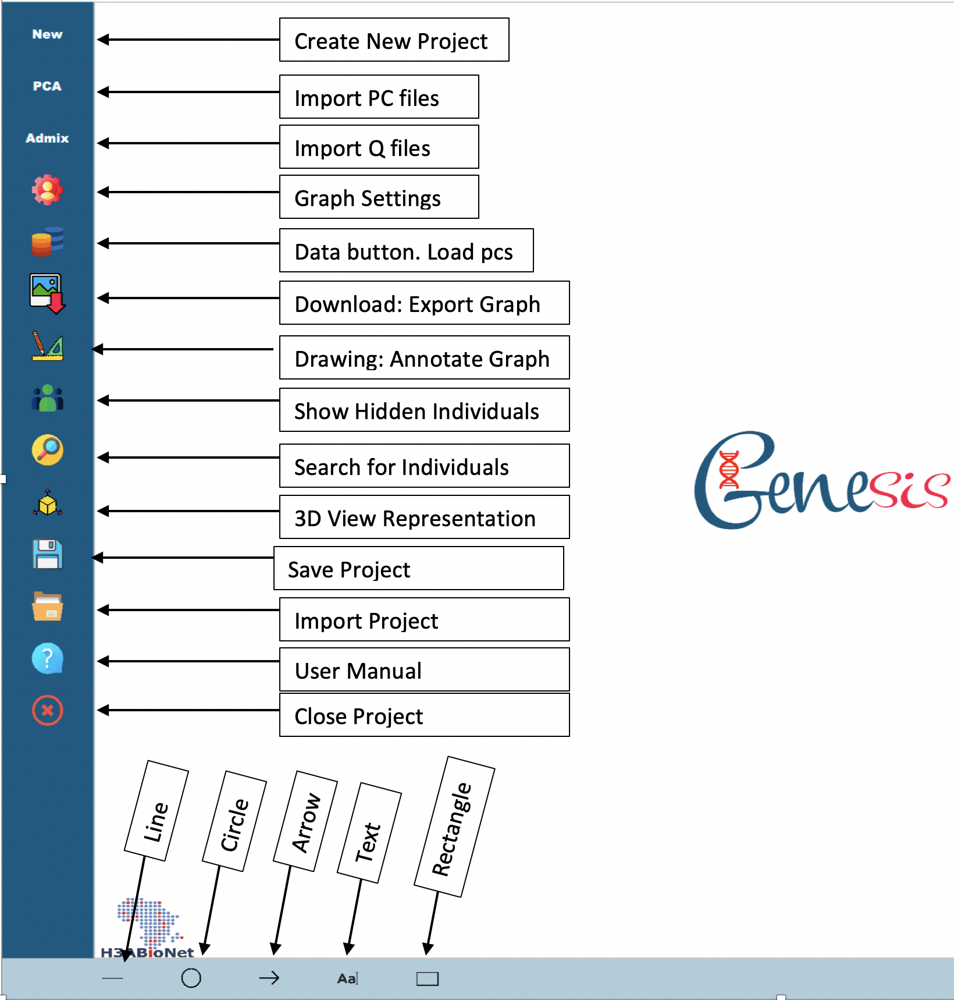

Genesis is a program created for scientists to generate PCA (Principal Component Analysis) and structure/admixture graphs from data outputted by common tools such as eigenstrat [Pritchard et al. 2000] and the SNPRelate [Zheng et al 2012] package for PCAs and Admixture [Alexander et al. 2009] and CLUMPP [Jakobsson and Rosenberg 2007] for admixtures.
Genesis was developed with user-friendliness in mind as other tools can be complex to use and lack certain features. All elements of the graphs that would need to be edited can be done so using a graphical user Interface where the graphs themselves are interactive and different elements can be viewed and changed at the click of the mouse. All this saves the time that scientists would rather be spending doing more important things.
Principal Component Analysis is a mathematical and statistical procedure that can be used to analyze genotype data. The differences between samples genotype data can be used to project each sample into a p-dimensional space, where the p axes are uncorrelated. For realistic data, typically p is 4 or less and often only the most important two dimensions are used. Programs such as eigenstrat produce the PCs, and Genesis produces them. An example is found below:


When Genesis runs, a menu appears on the left. The menu items are New, PCA, Admix, and other buttons as shown in the image below. If the cursor is placed over the icon, a brief description of the menu item is given.

The New button allows you to create a project by defining the project name, providing the fam file, phenotype file, and stating the phenotype column number. You MUST create a project with the fam file. The phenotype file and phenotype column are not mandatory. The PCA and Admix buttons will be activated after creating the project to enable you to import either the pcs or q files.
The PCA button allows you to import the pc file and select which pcs to be used in creating the graph. This button will be disabled after successfully importing the first PCA graph. Use the Data button to import other pcs. Every PCA graph is displayed on a separate tab which can be closed. The graph is deleted from the project whenever you close its tab.
The Admix button assists you to import every q file with k values that you would like to add to your structure plot. Graphs for these k values are stacked and displayed on the same tab.
The Download button with the red arrow pointing down is used to save the current graph displayed on the tab. The program allows saving using multiple file types such as pdf, jpg, png, and tiff.
The settings button allows you to change the text, headings, and orientations of the graphs. The settings window will automatically detect which graph is displayed on the current tab and will launch the settings for that specific graph.
The Drawing button allows you to annotate graphs with text and other shapes. A menu with the list of shapes is displayed/toggled at the bottom of the main window whenever the drawing button is clicked. Each shape can be dragged to a different location on the graph. You can modify shape properties by right-clicking it. The properties include size, color, and outlines.
Individuals: The icon with 3 individuals is the hidden individuals' button which allows you to see or unhide hidden individuals.
The Search button helps you to locate the position of an individual on the graph. It accepts the fid or iid of an individual before performing a search. For PCA graphs, the icon representing the individual was animated to grow or zoom in and out.
The 3D> button with a cube and 3-arrow icon is currently not implemented but will allow you to view your graphs in a 3D representation.
The Save button helps you to save your project in a .g2f format. These files can be shared and opened with colleagues using this current version of genesis.
The Import button is used to input existing or share projects. There is no need for importing the fam or phenotype file again since they are already stored in the project.
Help The manual is available under the help button which has an icon with the question mark
The Close button prompts you to close the program.